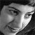

پذيرش > سایت نوشته ها > زنگ خطر
 قتل های ناموسی قتل های ناموسی

 زنگ خطر زنگ خطر
16 آذر 1387 - روزآنلاین / آسیه امینی - نسخه قابل چاپ
اعلام رسمي آمار 50 قتل ناموسي در عرض هفت ماه گذشته، توسط يک مقام ارشد پليس آگاهي ناجا، زنگ خطري جدي است که البته مدتها پيش به صدا درآمده اما بي توجهي به آن، هم در قانون ( وحتا بازخواني و تدوين دوباره لايحه قانون مجازات اسلامي) و هم در حوزه هاي بازدارنده ديگر موجب شده است که اين پديده اجتماعي که خشن ترين نوع خشونت خانگي و اجتماعي است، بالاخره از آمارهاي رسمي مقامهاي دولتي سر در آورد.
مرور چند خبر
تصوير اول: 11 ارديبهشت 87 مردي در دزفول دختر 24 ساله اش را در خواب با چکش کشت و سپس جسدش را به آتش کشيد. او در اعترافاتش گفته است : دخترم چند بار از خانه فرار كرده بود و بدون اجازه من به عقد موقت مردان غريبه در مي آمد. كارهاي او آبروي من را برده بود به همين خاطر ساعت 2 بامداد 11 ارديبهشت در حالي كه نجمه در خواب بود او را با ضربات چكش به قتل رساندم و سپس با انتقال جسدش به جاده دزفول، آن را به آتش كشيدم. همسرم ابتدا خواست راز اين جنايت را فاش كند اما او را تهديد كردم اگر موضوع را به كسي بگويد وي را نيز مي كشم- روزنامه قدس 25 ارديبهشت 87
تصوير دوم : 21 ارديبهشت 87 مرتضي برادر دختري به نام مرجان، وي را در داخل يک اتاق دار زد و بعد هم پيکر نيمه جانش را با چاقو از پاي در اورد. دليل مرتضي براي قتل خواهرش چنانکه در محکمه اعتراف کرد، دفاع از حيثيت برباد رفته خانواده به خاطر اقدام به فرار خواهرش با خواستگاري بود که خانواده او را نپذيرفته بود. مرجان و خواستگارش بعد از تلاش براي محرم شدن و بستن عقد در محضر، به دليل نداشتن رضايت پدر، نتوانستند به همسري هم در آيند. مرجان براي گرفتن رضايت پدر به خانه برگشت و در آتش خشم برادر سوخت - روزنامه اعتماد 26- خرداد87
تصوير سوم : روز 28 ارديبهشت 87، مرد 47 ساله اي در بيرجند دختر 18 ساله خود را در خانه خفه کرد. دختر او آسيه، ازدواج کرده بود و در شب حادثه، همسرش در مسافرت به سر مي برد. به نوشته روزنامه اعتماد زندگي آسيه مورد قبول پدرش نبوده و او، دخترش را باعث بي آبرويي خود و دامادش مي دانست. – روزنامه اعتماد – 31 ارديبهشت87
تصوير چهارم : محمد شريف، مردي است که در بهمن ماه 86 دختر 14 ساله اش سعيده را به کوه هاي کويين در اطراف زاهدان برده و در آنجا به همراه دوستش او را سنگسار کرده و سپس به ضرب چهار گلوله کشته است. علت سنگسار سعيده از سوي پدرش، داشتن رابطه با پسري – که وي نمي شناخته- عنوان شد. – روزنامه قدش – 24 بهمن86-
تصوير پنجم : آبان ماه 87 در شيراز، پدري دختر 14 ساله اش را به خاطر سوء ظن به داشتن رابطه با مردي به قتل رساند. اين مرد در تحقيقات پليس گفت که داشتن تهوع دخترش، به وي اطمينان داده که او با مردي رابطه نامشروع داشته است. از اين رو وي را در خوب با روسري خخفه کرد. ادعاي اين مرد در مورد رابطه جنسي دخترش توسط پزشکي قانوني رد شد. روزنامه قدس-12 آبان 87
مردي در استان فارس که نمي خواست دخترش در دانشگاه ادامه تحصيل بدهد و معتقد بود براي دختر، ازدواج بهتر از درس خواندن است، دخترش را به دليلي صحبت کردن با همکلاسي هاي پسرش، به اجبار به خانه رد، رويش نفت ريخت و آتش زد. اعتماد- چهارشنبه 1 آبان87
...
اين تصويرها سياهنمايي يا حتا بزرگنمايي يک واقعيت نيست. بلکه تنها ورق زدن حوادثي است که سه مورد اول آن فقط در عرض يک ماه در سه نقطه مختلف کشور رخ داده است.
شايد تصوري که بسياري از ما از قتلهاي ناموسي در ذهن داريم، مربوط شود به مناطقي خاص در کشور. مثلا جنوب، غرب يا جنوب شرقي. يا مناطقي که عشيره نشينند و سنت تسليم بودن در برابر اراده مرد خانواده يا رئيس طايفه، سنتي بي چون و چراست و سنت شکن، طبيعتا مجازاتي غير قابل انکار در پيش خواهد داشت. اما خبري که ماه پيش در يکي از روزنامه هاي صبح تهران مننتشر شد، حکايتي متفاوت از اين تصور ذهني ماست.
روز 21 آبان 87، پدري در خيابان شادمان تهران دختر 11 ساله اش را به آتش کشيد. دليلي که اين پدر در تحقيقات نخستين، براي پليس عنوان کرد، ديدن چند فيلم خانوادگي بوده که در آن دختر 11 ساله اش رقصيده است.
بنابراين پيش از هرچيز بايد بدانيم که قتل ناموسي امروز در کشور ما يک مساله قومي يا طايفه اي يا محدود به مناطقي خاص نبوده است و حتا اگر در گذشته چنين استنباطي وجود داشت، اينک اين پديده در بسياري از نواحي ايران ديده مي شود. چنانکه در همين خبرها نيز از بيرجند و زاهدان گرفته تا فارس و تهران و دزفول را شامل شده است.
دوم فرضي که در بازخواني اين پرونده ها به هم مي ريزد، دلايلي است که افراد براي اين قتلها عنوان کرده اند. پيش از اين، يکي از مهمترين دلايل قتل ناموسي، داشتن رابطه با مردي که از نظر خانواده مشروعيت نداشت، فرض مي شد. در حالي که در همين چند پرونده مي بينيم که اين مساله به برداشتهاي ذهني پدر و برادر، از هرنوع رابطه اي با مرد غيرـ نه فقط ازدواج- تسري يافته است. طوري که حتا رقص در يک محيط خانوادگي يا صحبت کردن با همکلاسي دانشگاهي منجر به شديدترين رفتارهاي خشونت باري شده است که نتيجه آن قتل دختر خانواده بوده که با وجو مقاومتهاي مادر، رخ داده است.
دختران "بي چرا مرده"
قتلهاي ناموسي را بايد نوعي از خشونت اجتماعي و خانوادگي به حساب آورد که با پشتوانه صريح قانون از پدر، به عنوان قيم و مسوول خانواده و با توجيه سنتها و مقررات نانوشته اجتماعي رخ مي دهد.
اگرچه مقررات و سنتها را نبايد ناديده گرفت. اما صرف توجيه سنت بودن يک عمل، در ميان يک قوم يا قبيله و عشيره و طايفه نمي تواند نافي دخالت قانون و مجازات، درباره مرتکبان آن باشد. اگر چه اين اصل، به ظاهر امري بديهي و پذيرفته شده است، اما در عمل شاهد سکوت معني دار قانون گذار و مجري قانون، هردو، در اين باره ايم.
قانونگذار در ماده 220 قانون مجازات اسلامي بصراحت از پدر خانواده در قتل فرزندش حمايت غير مستقيم کرده است و وي را به صرف پدر بودن از مجازات ساير قتلان، متمايز کرده و به وي امتياز فرار از مجازات سنگين داده است. در اين ماده قانوني پدر خانواده به پرداخت ديه به ورثه محکوم مي شود. اين در حالي است که کشتن دختران و زنان اگر به دلايل ناموسي باشد، نشان از تحکم و اراده سرکوبگر مرد يا مردان خانواده دارد به حدي که قادرند باعث مرگ اين دختران يا زنان آنهم به فجيع ترين شکل ممکن شوند. آيا در چنين خانواده اي، بايد از افراد خانواده مثلا مادر انتظار داشت که ديه دخترشان را از چنين پدري درخواست و دريافت کنند؟ و آيا چنين چيزي از اساس امکان پذير وبا ابتدايي ترين فرضيات ذهني و عقلي وو واقعي ما جور است؟
تکيه بر عدم مجازات قصاص براي پدر فرزند کش، اصرار بر تسري چنين قانوني بر پدران قاتل و اساسا تاييدي بر صدور احکام اعدام نيست. بلکه نشان از اين دارد که فرزند کشي نيز مثل هر قتل ديگري نشان از وجود و شيوع يک بيماري اجتماعي دارد. قانون در چنين مواقعي مي تواند با پيش بيني چنين شرايطي، بازدارنده و رعب انگيز باشد. وجود مجازاتهاي سنگيني چون حبس دراز مدت، مي تواند در برابر پدران قاتلي که دخترشان را تنها به جرم داشتن يا فرض بر داشتن رابطه با مردي که نزد خانواده براي داشتن اين رابطه مشروع نيست، شکنجه کرده يا مي کشند، بازدارنده باشد.
و مهمتر از آن واقعيت اين است که ما هيچ کار فرهنگي و اجتماعي در اين زمينه انجام نداده ايم. نه فقط در مناطقي که پديده دختر کشي و ناموس کشي، به يک معضل اجتماعي تبديل شده، بلکه در شهرهاي بزرگ نيز در سياستهاي فرهنگي و اجتماعي، ردپايي از آموزش يا پيشگيري ديده نمي شود.
زمان زيادي در پيش نداريم. تاکنون نيز وقت و انرژي زيادي هدر رفته اشت. بايد به فعالان زن در ايران گفت که اگر حکومت در اين باره، به هر دليلي، اقدامي نمي کند، آنها، به دليلي محکم حمايت از تغيير وضعيت اجتماعي دختران و زنان، آستين بالا بزنند.
روزآنلاین
ارسال به
بالاترین
،
توییتر
،
فریندفید
،
فیسبوک
در همين بخش :
 یک خبر تلخ؟ یک قانونشکنی؟ یک تصمیم بخشنامهای جدید؟ یک خبر تلخ؟ یک قانونشکنی؟ یک تصمیم بخشنامهای جدید؟
چرا بایست به سکسوالیته پرداخت؟ / نفیسه آزاد
آزارجنسی خانگی؛ «قربانی» نه، «نجات یافته»
زنان، بزرگترین بازندگان بهار عرب
سانسور از دیدگاه جنسیتی/الهه امانی
ديگر بخش ها :
طرح یک میلیون امضا
|
مقالات
|
سایت نوشته ها
|
اخبار
|
گزارش كمپين
|
گفت و گو
|
علیه سکوت
|
كوچه به كوچه
|
نامه های شما
|
گزارش ویژه
|
گفتگو با اعضا
|
ویژه سالگرد کمپین
|
تصویر برابری
|
دل آرام علی
|
تریبون
|
مقالات
|
تاریخ شفاهی
|
خارج از چارچوب
|
کتابخانه
|
درباره کمپین
|
کمپین در شهرها
|
کمپین در بند
|
صدای تغییر
|
ویژه 22 خرداد
|
لایحه حمایت از خانواده
|
گالری
|
عشا مومنی
|
امیر یعقوبعلی
|
خدیجه مقدم
|
راحله عسگری زاده و نسیم خسروی
|
پروین اردلان،جلوه جواهری، مریم حسین خواه، ناهید کشاورز
|
زینب پیغمبرزاده
|
سعیده امین، سارا ایمانیان، محبوبه حسین زاده، ناهید کشاورز و همایون نامی
|
احترام شادفر
|
نسیم سرابندی زاده،فاطمه دهدشتی
|
وبلاگ مهمان
|
پرونده خرم آباد
|
دستگیری ها
|
مریم مالک
|
پرستو اللهیاری
|
مهرنوش اعتمادی
|
سمیه رشیدی
|
Other Languages
|
همراهان
|
«فراخوان کمپین ده روز با بهاره هدایت»
| English
|